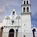
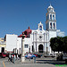
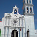

Estas son algunas de las parroquias e iglecias.

si quieres saver mas sobre de algunas otras iglesias entra a este link y encontraras la que solicites...
Esta iglecia es muy reconocida casi por todas las personas, mas por su feria que es muy hermosa y grande, ya que muchos turistas la visitan mas a diario y por las grandes creencias que le tienen al santo patron es un lugar bonito al cual puedes visitar mas a diario.


Para mas informacion puedes entrar a este link...
Esta parroquia es muy reconocida casi por todas las personas, ya que su parroquia es muy hermosa y grande, ya que muchos turistas la visitan mas a diario y por las grandes creencias que le tienen a esta virgen es un lugar bonito al cual puedes visitar mas a diario mas por que se encuentra en el centro. 
Para mas informacion puedes entrar a este link...